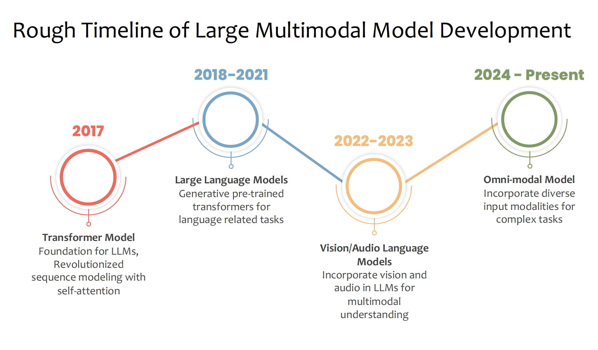
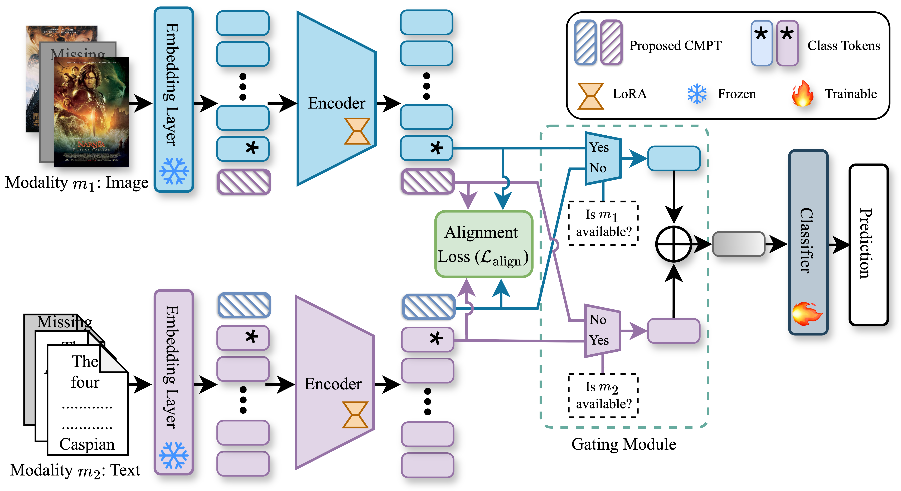

Our Research Projects

Details
Foundations and Recent Trends in Robust Multimodal Learning
M. Salman Asif, Md Kaykobad Reza
ICIP 2025 Tutorial

Details
Robust Multimodal Learning via Cross-Modal Proxy Tokens
Md Kaykobad Reza, Ameya Patil, Mashhour Solh, M. Salman Asif
TMLR

MMSFormer: Multimodal Transformer for Material and Semantic Segmentation
Md Kaykobad Reza, Ashley Prater-Bennette, and M. Salman Asif
IEEE Open Journal of Signal Processing (OJSP) 2024

Robust Multimodal Learning with Missing Modalities via Parameter-Efficient Adaptation
Md Kaykobad Reza, Ashley Prater-Bennette, and M. Salman Asif
IEEE Transactions on Pattern Analysis and Machine Intelligence (TPAMI) 2024

Targeted Unlearning with Single Layer Unlearning Gradient
Zikui Cai, Yaoteng Tan, M. Salman Asif
International Conference on Machine Learning (ICML) 2025

Domain Expansion via Network Adaptation for Solving Inverse Problems
Nebiyou Yismaw, Ulugbek S. Kamilov, M. Salman Asif
IEEE Transactions on Computational Imaging (TCI) 2024